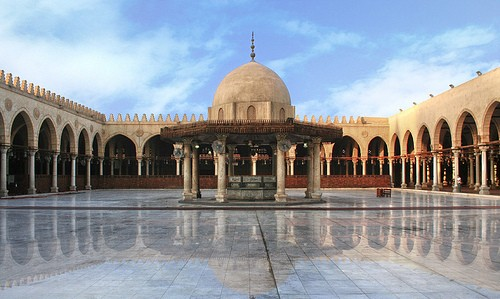

Namanya adalah Amr bin Ash bin Wail bin Hisyam bin Said bin Sahm al-Qurasyi as-Sahmi. Di antara jasa besarnya adalah ketika Umar bin Khattab mengamanatinya untuk menaklukkan Mesir, dan dia berhasil menunaikan amanat tersebut. Amr merupakan salah seorang pahlawan bangsa Arab yang sangat terkenal, sekaligus seorang politisi yang cemerlang. Terkenal dengan kecerdasan dan kepintarannya mengatur siasat.
Sebelum Memeluk Islam
Kuniah Amr bin al-Ash adalah Abu Abdullah atau Abu Muhammad. Ia adalah seorang pedagang yang biasa bersafar ke Syam, Yaman, Mesir, dan Habasyah. Amr bin al-Ash memiliki bakat alamiah yang komplit, seorang penunggang kuda yang mahir, termasuk di antara kesatrinya kaum Quraisy, negosiator ulung, dan ia juga seorang penyair yang puitis dan fasih bahasanya. Tidak heran, mengapa orang-orang Quraisy mengirimnya untuk melobi an-Najasyi agar mengembalikan orang-orang Mekah yang hijrah ke Habasyah.
Keislaman Amr bin al-Ash
Amr bin al-Ash masuk Islam pada tahun 8 H setelah kegagalan Quraisy dalam perang Ahzab dan enam bulan sebelum penaklukkan Kota Mekah. Saat itu ia datang bersama Khalid bin Walid dan Utsman bin Thalhah ke Kota Madinah. Ketika tiga orang ini menemui Rasulullah shallallahu ‘alaihi wa sallam, Rasulullah menatap ketiganya, lalu bersabda, “Mekah telah memberikan putra terbaiknya untuk kalian (umat Islam).”
Amr bin al-Ash mengatakan, “Pada saat Allah menganugerahkan hidayah Islam di hatiku, aku mendatangi Rasulullah shallallahu ‘alaihi wa sallam.
Aku mengatakan, ‘Julurkanlah tangan Anda, aku akan membaiat Anda’. Rasulullah pun menjulurkan tangan kanannya kepadaku. Lalu kutahan tanganku –sebentar-.
Rasulullah bertanya, ‘Ada apa wahai Amr?’
Kujawab, ‘Aku ingin Anda memberikan syarat kepadaku’.
Rasulullah mengatakan, ‘Apa syarat yang kau inginkan?’
Aku menjawab, ‘Agar dosa-dosaku diampuni.’
Kemudian Rasulullah shallallahu ‘alaihi wa sallam bersabda, ‘Tidakkah engkau ketauhi, bahwa keislaman menghapuskan dosa-dosa sebelumnya? Demikian juga hijrah menafikan kesalahan-kesalahan yang telah lalu? Dan juga haji menyucikan hilaf dan dosa terdahulu?’ (HR. Muslim).”
Di masa keislamannya, Rasulullah dekat kepadanya dan mendidiknya dengan pendidikan tauhid yang murni. Rasulullah tahu, Amr adalah orang yang istimewa, terkenal dengan keberanian dan bakat-bakat lainnya. Rasulullah mengutus kepadanya seorang utusan yang membawa pesan, “Bawalah pakaian dan senjatamu, lalu temuilah aku.”
Amr mengatakan, “Lalu aku menemui beliau yang saat itu sedang berwudhu. Beliau menatapku lalu menganguk-anggukkan kepalanya. Setelah itu beliau bersabda,
“Sesungguhnya aku hendak mengutusmu berperang bersama pasukan. Semoga Allah menyelamatkanmu, memberikan ghanimah, dan aku berharap engkau mendapat harta yang baik.”
Amr menanggapi, “Wahai Rasulullah, aku masuk Islam bukan untuk mencari harta, akan tetapi aku berislam karena aku mencintai agama ini. Dan menjadi salah seorang yang bersama Rasulullah shallallahu ‘alaihi wa sallam (sahabatmu).
Kemudian Rasulullah shallallahu ‘alaihi wa sallam bersabda,
“Wahai Amr, sebaik-baik harta adalah harta yang dimiliki orang yang shaleh.” (HR. Ahmad dalam Musnad-nya no.17798 dan Hakim no.2926).
Rasulullah shallallahu ‘alaihi wa sallam bersabda,
إِنَّ عَمْرَو بْنَ العَاصِ مِنْ صَالحِي قُرَيْشٍ
“Sesungguhnya Amr bin al-Ash adalah di antara orang-orang yang baik dari kalangan Quraisy.” (HR. Tirmidzi dalam Sunan-nya no.3845).
Dalam riwayat Hakim dalam Mustadrak Rasulullah mempersaksikan bahwa Amr bin al-Ash adalah orang yang beriman bukan seorang laki-laki yang munafik.
ابْنَا الْعَاصِ مُؤْمِنَانِ هِشَامٌ وَعَمْرٌو
“Dua orang anak laki-laki al-Ash adalah orang yang beriman, yaitu Hisyam dan Amr.” (HR. Hakim no.5053 dan Ahmad dalam Musnad-nya no. 8029)
Ini adalah persaksian dari manusia yang paling mulia, yang perkataannya adalah wahyu yang tidak didustakan, atas keimanan Amr bin al-Ash. Rasulullah sangat mencintai dan mengagumi kemampuan Amr bin al-Ash, terbukti dengan beliau mengangkatnya sebagai pimpinan pasukan perang Dzatu Salasil dan mengangkatnya sebagai amir wilayah Oman sampai beliau shallallahu ‘alaihi wa sallam wafat.
Penaklukkan oleh Amr bin al-Ash
Pada masa Abu Bakar ash-Shiddiq, Amr bin al-Ash turut serta dalam memerangi orang-orang murtad. Setelah itu Abu Bakar mengangkatnya sebagai panglima salah satu pasukan yang diberangkatkan menuju wilayah Syam. Lalu ia bergabung dengan Khalid bin Walid dalam Perang Yarmuk. Kemudian ia merampungkan penaklukkan wilayah Syam. Melalui pemimpin ulung ini, wilayah Gaza, Yafa, Rafah, Nabulus, dll. berhasil dikuasai kaum muslimin.
Pada masa Umar bin Khattab, ia dipercaya memimpin wilayah Palestina. Kemudian Umar memerintahkannya berangkat menuju Mesir untuk menghadapi pasukan Romawi. Umar sangat mengagumi kecerdasan yang dimiliki Amr bin al-Ash, sampai-samapi ia memujinya dengan mengatakan, “Tidak pantas, bagi Abu Abdullah (Amr bin al-Ash) berjalan di muka bumi ini kecuali sebagai seorang pemimpin.” (Riwayat Ibnu Asakir dalam Tarikh Dimasyq, 46:155).
Tibalah waktu dimana Umar bin Khattab memerintahkan Amr untuk berangkat ke Mesir memerangi orang-orang Romawi. Menyerang negara adidaya ini, Amr hanya diberi bekal 4000 orang pasukan yang berangkat bersamanya. Tanpa perasaan gentar dan takut, pasukan pun bertolak menuju ke tanah para Firaun itu.
Amirul mukminin, Umar bin Khattab tetap memantau pasukan ini, ia senantiasa meneliti kabar-kabar tentang Romawi di Mesir dan juga senantiasa berdiskusi dengan pembesar sahabat. Setelah beberapa diskusi dan mendengar kabar-kabar tentang Romawi, Umar khawatir dengan pasukan Amr, khawatir mereka tidak mampu menghadapi pasukan Romawi yang begitu kuat dan banyak jumlahnya. Akhirnya amirul mukminin menulis surat kepada Amr,
إذا بلغتكَ رسالتي قبل دخولك مصر فارجع، وإلَّا فسِرْ على بركة الله
Apabila suratku sampai kepadamu sebelum engkau memasuki Mesir, maka kembalilah! Tetapi jika engkau sudah memasukinya, lanjutkanlah dengan keberkahan dari Allah.
Akhirnya surat tersebut sampai ke tangan Amr yang kala itu sudah memasuki wilayah Arisy (pinggiran Mesir pen.). Amr bertanya kepada pasukannya, “Apakah kita sudah memasuki Mesir atau masih berada di wilayah Palestina?” Pasukannya menjawab, “Sekarang kita sudah di Mesir.” Lalu Amr mengatakan, “Jika demikian kita lanjutkan perjalanan sebagaimana yang diperintahkan amirul mukminin.”
Pemimpin yang cerdik dan pemberani ini membawa pasukannya menaklukkan kota demi kota di wilayah Mesir. Dimulai dari Kota Farma, kemudian Belbis, dan Ummu Danain. Setelah itu sampailah Amr di kota besar Iskandariyah. Di kota ini terdapat 50.000 orang pasukan Romawi.
4000 pasukan yang tenaganya telah tercurah dalam beberapa peperangan sebelumnya, dengan gagah berani mengepung Kota Iskandariyah yang memiliki pasukan yang besar. Di tengah pengepungan, tersiar kabar bahwa Raja Romawi di Konstantinopel wafat dan digantikan dengan adiknya. Sang adik yang tidak banyak mengetauhi tentang konflik di Mesir ini, memandang tidak ada celah untuk mengalahkan umat Islam. Ia memerintahkan perwakilannya di Mesir, Raja Muqauqis, agar mengikat perjanjian damai dengan umat Islam.
Dalam perjanjian damai itu, tersebutlah beberapa poin berikut ini: (1) Setiap orang menyerahkan dua dinar, kecuali orang tua dan anak-anak, (2) Orang-orang Romawi pergi dengan harta dan barang-barang mereka dari Kota Iskandariyah, (3) Umat Islam menghormati gereja-gereja Kristiani saat memasuki kota, dan syarat lainnya. Setelah itu, Amr mengirimkan kabar gembira ke Madinah bahwa Mesir sudah jatuh ke tangan umat Islam.
Menjadi Gubernur Mesir
Masjid Amr bin al-Ash di Kairo. Masjid ini adalah masjid pertama yang dibangun di benua Afrika, pada tahun 21 H/641 M
Orang-orang Mesir menyambut gembira kedatangan umat Islam, hal itu dikarenakan mereka mengetahui keadilan umat Islam dan mereka bebas dari kezaliman dan sifat kasar orang-orang Romawi. Amr bin al-Ash berkata kepada penduduk Mesir, “Wahai penduduk Mesir, sesungguhnya Nabi kami telah mengabarkan bahwa Allah akan menaklukkan Mesir untuk umat Islam, dan beliau –shallallahu ‘alaihi wa sallam– mewasiatkan kami agar berbuat baik kepada kalian. Rasulullah shallallahu ‘alaihi wa sallam bersabda,
‘Jika kalian menaklukkan Mesir, maka aku wasiatkan agar kalian berbuat baik kepada orang-orang Qibthi ini. Mereka berhak atas perlindungan dan kasih sayang’.” (HR. Muslim no.2543).
Selama masa-masa memimpin Mesir, Amr sangat mencintai dan dicintai rakyatnya. Ia memperlakukan mereka dengan adil dan penuh hikmah. Pada masanya juga Mesir mengalami kemajuan pembangunan, di antaranya perencanaan pembangunan Kota Fustat (sekarang disebut Kairo).
Wafatnya Amr bin al-Ash
Amr bin al-Ash wafat pada tahun 43 H atau 663 M, saat itu umurnya lebih dari 90 tahun. Ia telah meriwayatkan 39 hadis dari Nabi shallallahu ‘alaihi wa sallam.
Ketika ia sedang sakit yang mengantarkannya kepada wafat, anaknya Abdullah bin Amr datang menemuianya. Abdullah melihat ayahanda tercinta sedang menangis, lalu ia mengatakan, “Wahai ayahanda, bukankah Rasulullah shallallahu ‘alaihi wa sallam telah memberikan kabar gembira kepadamu, bukankah Rasulullah shallallahu ‘alaihi wa sallam telah memberikan kabar gembira kepadamu.”
Kemudian Amr menghadapkan wajahnya dan mengatakan, “Aku mengalami tiga fase perjalanan hidup; dahulu aku adalah orang yang sangat membenci Rasulullah shallallahu ‘alaihi wa sallam. Aku sangat senang apabila aku berhasil menangkapnya lalu membunuhnya dengan tanganku. Seandainya aku wafat dalam fase ini, pastilah aku menjadi penduduk neraka.
Ketika Allah menghadirkan kecintaan terhadap Islam di dalam hatiku, aku mendatangi Nabi shallallahu ‘alaihi wa sallam, kukatakana kepada beliau, ‘Julurkanlah tangan Anda, aku akan membaiat Anda’. Rasulullah pun menjulurkan tangan kanannya kepadaku. Lalu kutahan tanganku –sebentar-.
Beliau bertanya, ‘Ada apa wahai Amr?’
Kujawab, ‘Aku ingin Anda memberikan syarat kepadaku’.
Rasulullah mengatakan, ‘Apa syarat yang kau inginkan?’
Aku menjawab, ‘Agar dosa-dosaku diampuni.’
Kemudian beliau shallallahu ‘alaihi wa sallam bersabda, ‘Tidakkah engkau ketauhi, bahwa keislaman menghapuskan dosa-dosa sebelumnya? Demikian juga hijrah menafikan kesalahan-kesalahan yang telah lalu? Dan juga haji menyucikan hilaf dan dosa terdahulu?’
Tidak ada seorang pun yang lebih aku cintai daripada Rasulullah shallallahu ‘alaihi wa sallam, mataku senantiasa membayangkan dirinya. Aku segan menahan pandanganku –menatap matanya saat matanya menatap mataku- yang demikian, karena aku sangat menghormatinya. Kalau sekiranya aku dipinta untuk menjelaskan fisik beliau, -mungkin- aku tidak mampu, karena aku tidak pernah menyorotkan mataku kepadanya karena rasa hormatku untuknya. Jika aku wafat dalam keadaan demikian, aku berharap aku termasuk penduduk surga.
Kemudian terjadilah suatu perkara, yang aku tidak tahu bagaimana keadaanku kala itu. Tidak bersamaku angin yang berhembus demikian juga api. Saat kalian menguburkanku dan kalian lempari aku dengan tanah pekuburan, kemudian kalian berdiri sesaat di pemakamanku, dan aku menunggu apa yang aku akan jawab dari pertanyaan utusan (malaikat) Rab-ku.” (Riwayat Muslim dalam kitab al-iman, no.121)
Demikianlah Amr bin al-Ash, seorang sahabat yang mulia, seseorang yang memiliki jasa besar terhadap penyebaran dan kekuatan Islam juga terhadap umat Islam. Seorang yang dicintai oleh Rasulullah shallallahu ‘alaihi wa sallam dan para khalifah setelahnya. Semoga Allah meridhai beliau…